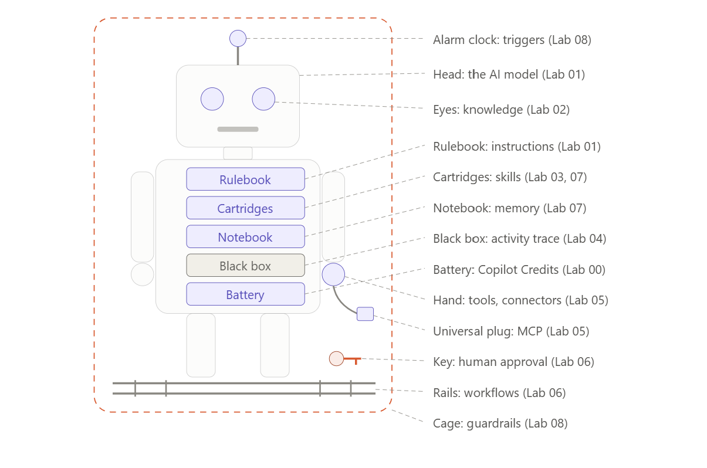

From Simple Agents to Autonomous Agents
Hands-on labs for Microsoft 365 Copilot Agent Builder and Microsoft Copilot Studio
Ten progressive labs. One storyline. You build the Contoso IT Service Desk step by step:
- first a simple agent that only follows instructions,
- then an agent that knows your documents,
- then an agent that acts (tools, workflows, MCP),
- then a team of agents that work together,
- and finally an autonomous agent that starts on its own when something happens, with a human in the loop where it matters.
Note
Audience: mixed workshop. Labs 00-03 are for anyone with Microsoft 365 Copilot (no technical background needed). Labs 04-09 are for makers, IT pros and pre-sales engineers who want to go deeper.
The learning path
| # | Lab | Tool | Level | Time |
|---|---|---|---|---|
| 00 | Prepare the lab environment | SharePoint, Copilot Studio | Setup | 30 min |
| 01 | Build your first agent with natural language | Agent Builder | ⭐ | 30 min |
| 02 | Ground your agent in company knowledge | Agent Builder | ⭐ | 40 min |
| 03 | Capabilities, skills and the jump to Copilot Studio | Agent Builder | ⭐⭐ | 40 min |
| 04 | Your first Copilot Studio agent | Copilot Studio | ⭐⭐ | 45 min |
| 05 | Give your agent hands: connectors and MCP tools | Copilot Studio | ⭐⭐⭐ | 60 min |
| 06 | Workflows and human approval | Copilot Studio | ⭐⭐⭐ | 60 min |
| 07 | Skills, memory and connected agents | Copilot Studio | ⭐⭐⭐⭐ | 60 min |
| 08 | Build an autonomous agent with triggers | Copilot Studio | ⭐⭐⭐⭐⭐ | 75 min |
| 09 | Evaluate, publish and govern your agents | Copilot Studio, M365 admin center | ⭐⭐⭐⭐ | 45 min |
Total: about 8 hours. Split it into two days, or run Labs 00-04 as a half-day "business" track and Labs 05-09 as a full-day "maker" track.
How the agent grows: think of it as a robot
Across the ten labs you build one robot, piece by piece. Each lab adds a part and tests it.

| Robot part | What it is in Copilot Studio | Lab |
|---|---|---|
| Battery | The environment and its Copilot Credits. No power, no robot | 00 |
| Head | The AI model, the brain | 01 |
| Rulebook | The instructions: who you are, what you do, what you never do | 01 |
| Eyes | Knowledge: it reads the Contoso policies and cites them | 02 |
| Cartridges | Skills: one precise procedure, loaded only when needed | 03, 07 |
| Black box | The activity trace: every thought and every move, recorded | 04 |
| Hand | Tools and connectors: it creates tickets and sends emails | 05 |
| Universal plug | MCP: any service that speaks MCP plugs straight in | 05 |
| Rails | Workflows: fixed steps, always in the same order | 06 |
| Key | Human approval: a person decides, not the robot | 06 |
| Notebook | Memory: it remembers each user's preferences | 07 |
| A colleague robot | Connected agents: it asks the License Advisor instead of copying its knowledge | 07 |
| Alarm clock | Triggers: it wakes up on its own when something happens | 08 |
| Cage | Guardrails: fixed inputs, limited tools, a shared account with only the access it needs | 08 |
| Inspection | Evaluate, publish and govern before it leaves the workshop | 09 |
The agents you build along the way: Contoso IT Helper (Labs 01-03, Agent Builder) → Contoso Service Desk (Labs 04-07, Copilot Studio) with its colleague Contoso License Advisor (Lab 07) → Contoso Triage Agent (Lab 08) → evaluated, published and governed (Lab 09).
Prerequisites
| Requirement | Used in | Notes |
|---|---|---|
| Microsoft 365 tenant (E3/E5 or Business Premium) | All | A demo/test tenant is strongly recommended |
| Microsoft 365 Copilot license for each learner | 01-03 | Agent Builder also works with pay-as-you-go, but some knowledge sources (email, Teams chats) need the Copilot license |
| Copilot Studio access (license, trial, or Copilot Credits pay-as-you-go) | 03-09 | Agents on the Microsoft Copilot harness consume Copilot Credits while you build, test and evaluate |
| A Power Platform environment with Dataverse | 03-09 | Needed to copy agents from Agent Builder and to build in Copilot Studio |
| SharePoint site you own | 00-08 | Created in Lab 00 |
| Microsoft Teams | 05, 08, 09 | For notifications and publishing |
| Global admin or AI admin (trainer only) | 09 | To approve the agent in the Microsoft 365 admin center |
Note
Heads-up about the UI. These labs were written in November 2026. Copilot Studio now builds new agents on the Microsoft Copilot harness by default (Build / Preview / Evaluate tabs). Several features used here (triggers, memory, skills, evaluation) are marked preview. Labels can move. When a button isn't where the lab says, look for the same word in the Build tab components panel or in Agent settings.
Lab files
Download everything at once: Copilot-Studio-lab-main.zip. Extract it, then open the Allfiles/Labs folder.
Or download only the file you need:
| Lab | File | What it's for |
|---|---|---|
| 00 | Contoso-Laptop-and-Device-Policy.docx | Policy uploaded to the SharePoint Documents library |
| 00 | Contoso-Software-Request-Policy.docx | Policy: software categories A to D (used again in Lab 06) |
| 00 | Contoso-Remote-Access-and-VPN-Guide.docx | Policy uploaded to the SharePoint Documents library |
| 00 | Contoso-Password-and-MFA-Policy.docx | Policy uploaded to the SharePoint Documents library |
| 03 | Contoso-IT-Tickets-Q3-2026.csv | 240 tickets to analyze with the code interpreter |
| 03, 07, 08 | it-ticket-triage.zip | The triage skill package (upload the .zip). View SKILL.md |
| 07 | Contoso-License-Catalog.docx | Knowledge for the Contoso License Advisor |
| 09 | Contoso-ServiceDesk-TestSet.csv | Test set for Evaluate |
Repository layout
| Folder | What's inside |
|---|---|
Instructions/Labs |
The lab guides, one Markdown file per lab |
Instructions/Labs/media |
The screenshots used in the labs |
Instructions/Trainer |
Trainer notes: agendas, team setup, troubleshooting |
Allfiles/Labs |
The lab files listed above, one folder per lab |
Author: Mohamed Dyabi - Microsoft Certified Trainer. Contoso is a fictitious company used for training.